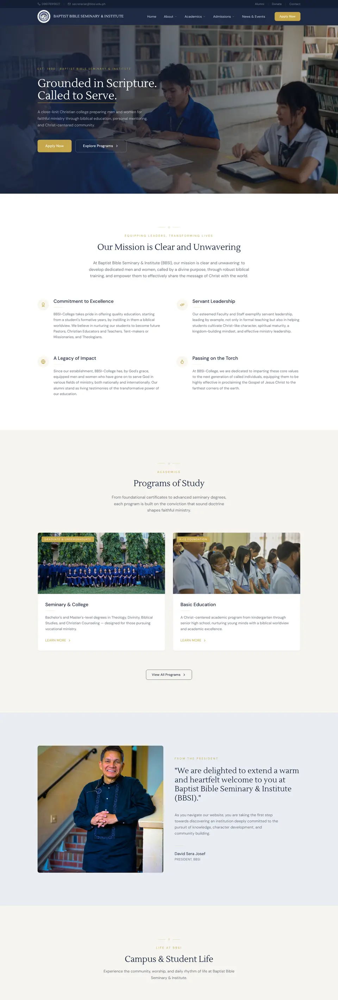
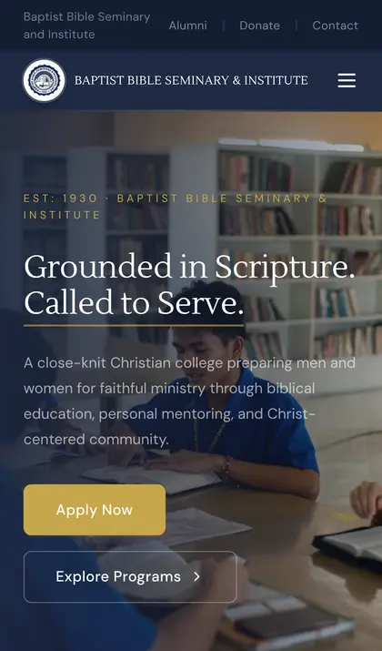
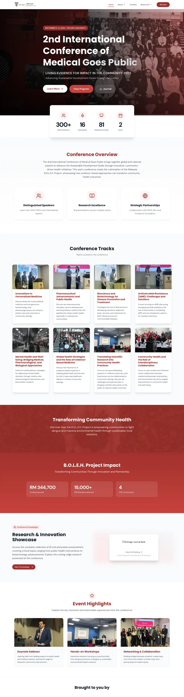
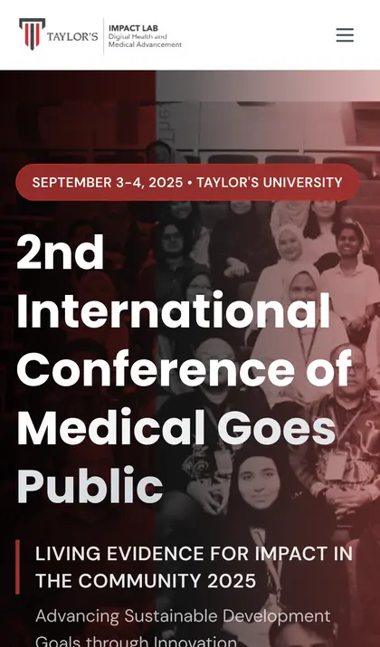
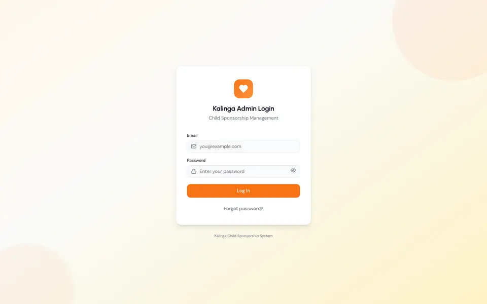
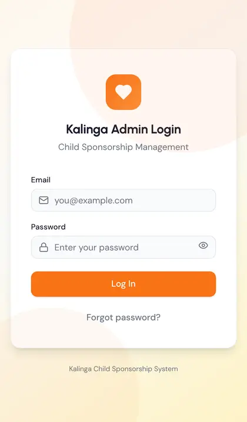
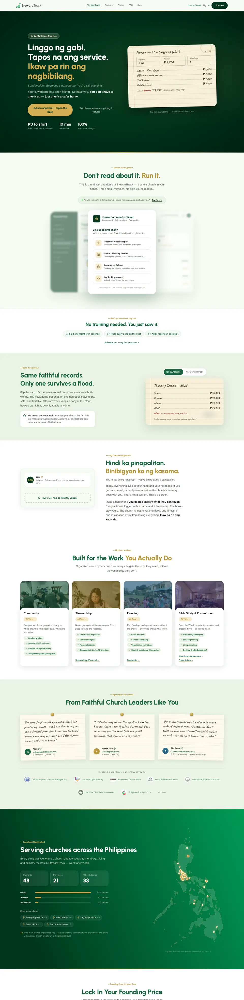
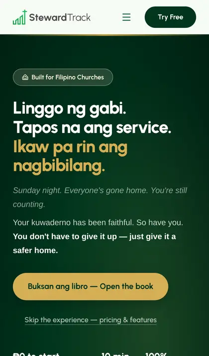
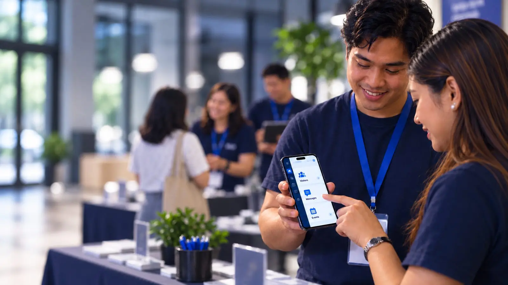

Our work
Real projects for real organizations.
Schools, ministries and event organizers we’ve partnered with — what they needed, what we built, and how it turned out.
SCHOOL · WEBSITE & EMAIL
Baptist Bible Seminary & Institute
A theological institution in the Philippines training the next generation of ministry leaders. They needed a digital presence that matched the caliber of their academic program.
- The challenge
- Represent the seminary online, explain its programs clearly and help prospective students get in touch — without a large IT budget or in-house tech team.
- What we built
- A fully responsive website that reflects the institution’s academic credibility, plus branded email for every faculty and staff member under bbsi.edu.ph.
- The outcome
- BBSI now has a digital home that matches its mission — and its IT administrator called the experience “commendable.”


Hover or tap the screen to scroll the full page

The professionalism of their services is commendable. We look forward to more partnership opportunities in the future.


Hover or tap the screen to scroll the full page
NONPROFIT · EVENT WEBSITE
Medical Goes Public Conference
Taylor University’s medical conference brings healthcare professionals together for sessions, workshops and continuing education — and it needed a website ready before a fixed event date.
- The challenge
- Open registration and ticketing, present speakers and the agenda clearly, and support abstract submissions and CME credit information — well ahead of the event.
- What we built
- A complete event website with online registration and ticketing, a speaker and agenda showcase, an abstract submission workflow and CME credit details — one hub for attendees.
- The outcome
- Attendees registered, browsed the schedule and submitted abstracts without manual back-and-forth, on a site built to handle event-day traffic.
NONPROFIT · CUSTOM WEB APP
Kalinga — Kapatid Ministry
Kapatid Ministry connects sponsors with children in need across the Philippines. As the program grew, tracking it all on spreadsheets got harder to manage and easier to get wrong.
- The challenge
- Keep a growing list of children and sponsors accurate, sponsorships correctly matched, and records easy for staff to find.
- What we built
- Kalinga, a custom web app for child and sponsor profiles, sponsorship tracking and searchable records — built around how the ministry’s team actually works.
- The outcome
- Staff onboard children and sponsors, check sponsorship status and pull up any record in seconds — more time for relationships, less for paperwork.


An internal tool for Kapatid Ministry’s team — not publicly accessible.


Hover or tap the screen to scroll the full page
CHURCH · OUR OWN PLATFORM
StewardTrack
Local churches often run on spreadsheets, paper records and disconnected tools. Rather than build another one-off website, we built the platform we wished every church had.
- The challenge
- Manage member and family records, track giving, keep finances organized and plan services and events — without stitching tools together.
- What we built
- StewardTrack, our own church management platform: membership records, online giving and donation tracking, fund accounting and reporting, and event scheduling in one system.
- The outcome
- Proof that we understand ministry operations as well as software — one system built for how churches actually run.

Tell us what’s getting in the way.
A free 30-minute call. No pressure, no jargon — just a conversation.
or email customers@cortanatechsolutions.com